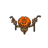

Crucified skeleton on the wall
| This article is a stub. You can help Graveyard Keeper Wiki by expanding it. |
| Crucified skeleton on the wall | |
|---|---|
 | |
Basic information
| |
Required Technology :
|
Snake quest line |
Related pages :
|
Dungeon |
Location(s)
| |
| Sacrifice zone | |

Provides +1 .
.
There are two special slots for this in sacrifice zone
Cost
| Icon | Materials Required | Energy | Notes |
|---|---|---|---|
| 1× Skull |
Requires: ? |

| ||||||||